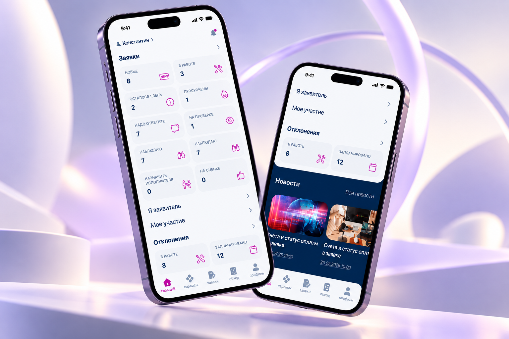
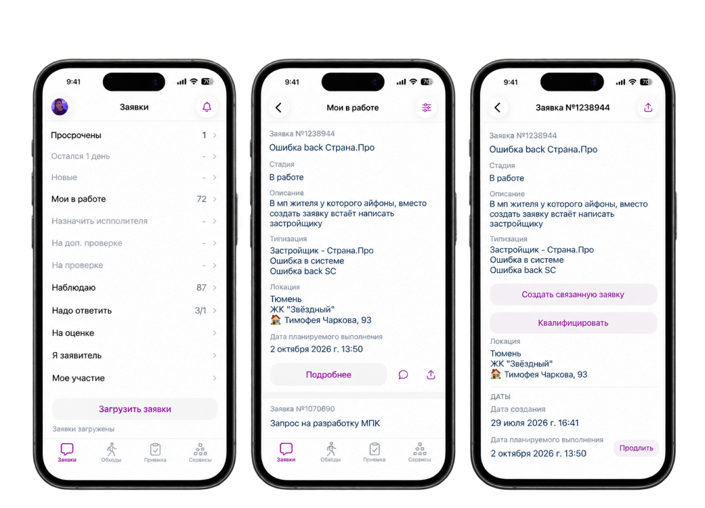
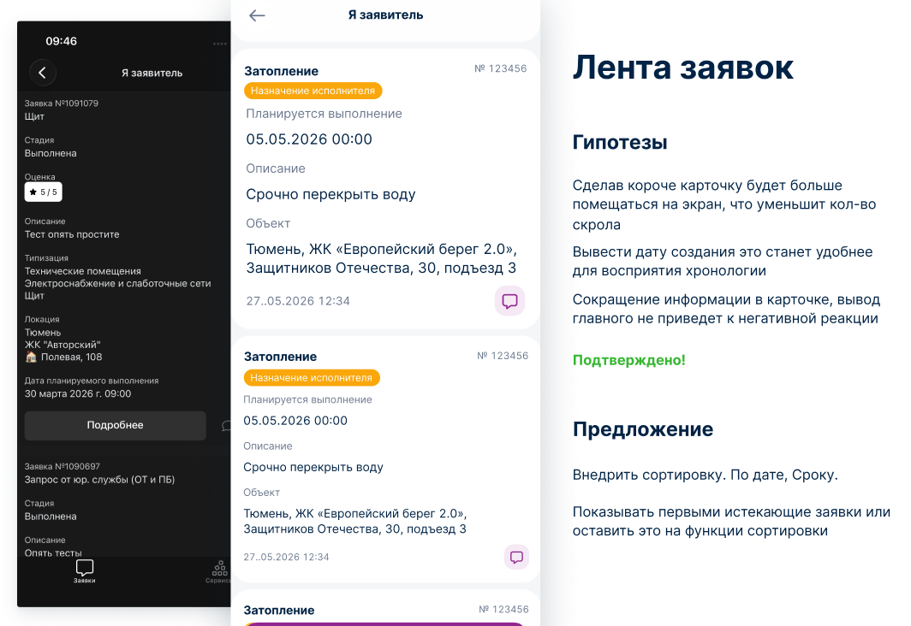
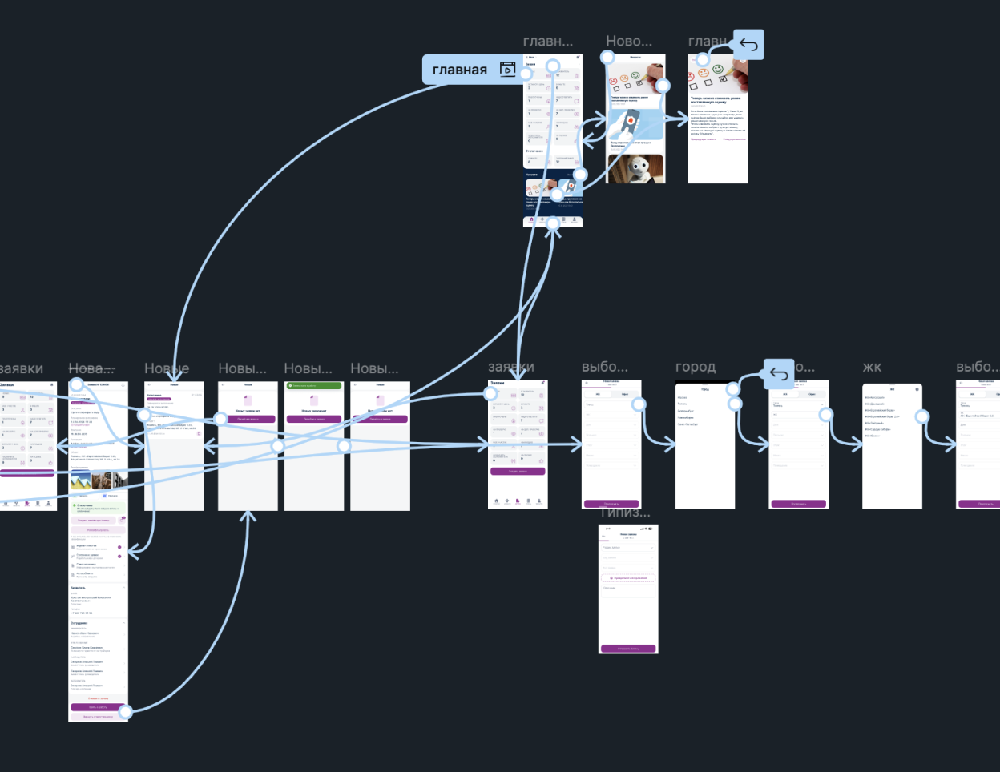
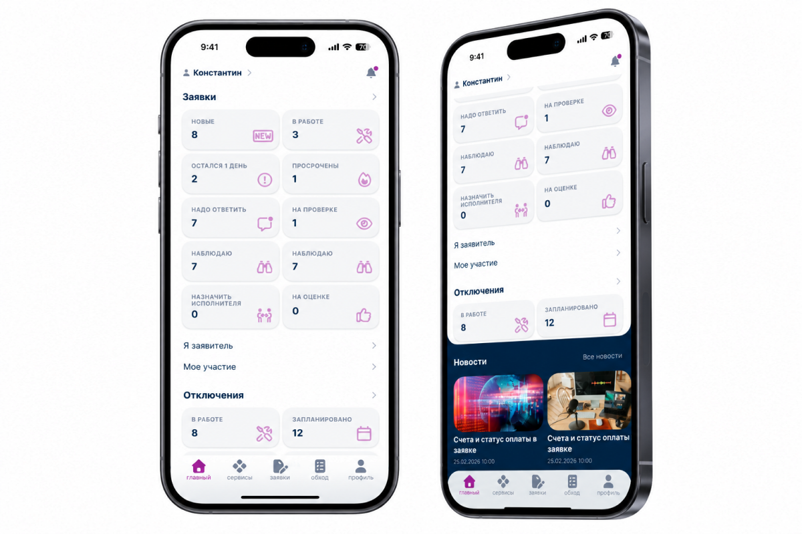
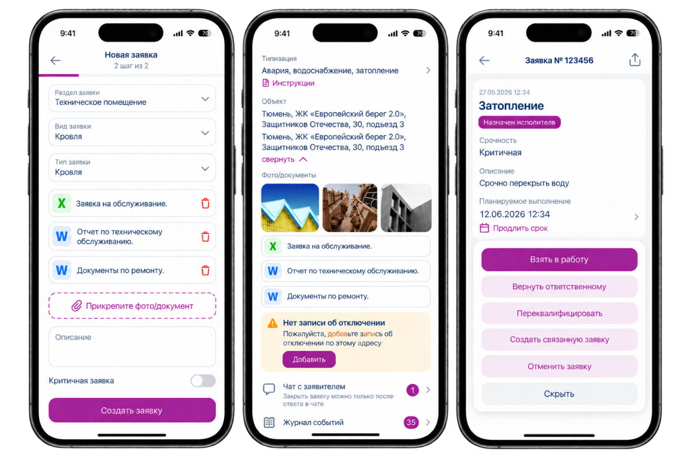
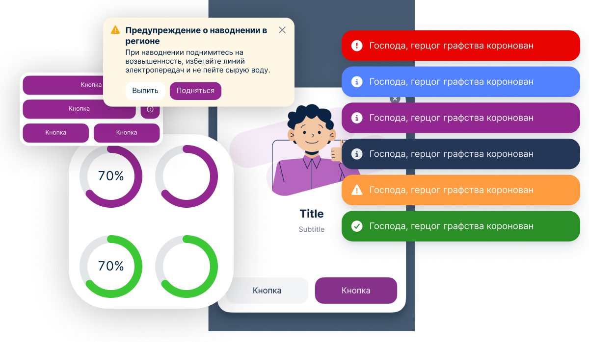
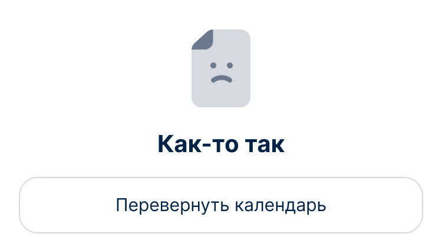

05
Наш Дом Pro —
мобильное
приложение
Редизайн iOS-приложения для сотрудников управляющей компании: исследование пользователей, проверка ключевых сценариев, проектирование нового интерфейса и UI Kit.

01
Контекст
«Наш Дом Pro» — мобильное приложение для сотрудников управляющей компании. Через него работают с объектами ЖК: проводят обходы, фиксируют нарушения, создают и контролируют заявки, находят информацию о жильцах и работают с отключением услуг. Задача редизайна — разобраться в реальных сценариях сотрудников и пересобрать ключевые разделы приложения вокруг их ежедневной работы.
Интерфейс до редизайна

02
Исследование
Провёл пользовательские интервью с сотрудниками, работающими с приложением. Собрал проблемы, потребности и особенности использования продукта в реальных рабочих сценариях, после чего систематизировал результаты в отдельной презентации.

03
Проверка ключевых сценариев
На основе результатов интервью собрал интерактивный прототип ключевых сценариев: главная страница, создание заявки и просмотр заявки. Прототип позволил проверить структуру и последовательность действий до детальной проработки интерфейса.

04
Главная
После исследования и проверки сценариев спроектировал новый главный экран приложения. Пересобрал структуру и приоритеты контента, чтобы основные рабочие действия и актуальная информация были доступны непосредственно с главной.

05
Заявки
Начал переработку раздела заявок: создание новой заявки, просмотр карточки, статусы, участники, вложения и связанные действия. Сценарий проектировался на компонентах нового UI Kit и учитывал разные состояния заявки.

06
UI Kit
Единая база для мобильного приложения
Параллельно с продуктовыми сценариями собирал и развивал UI Kit приложения: базовые элементы, формы, состояния, навигацию и компоненты для сложных рабочих сценариев.

Работа остановилась на этапе
проектирования
Редизайн продолжался: после главной страницы и новостей началась детальная проработка раздела заявок. Проект не был завершён — моя работа над продуктом закончилась из-за сокращения команды.
